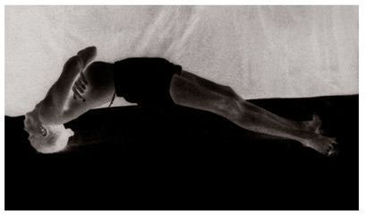

Ubhaya Padangushtasana has fifteen vinyasas, the 9th of which is its state.
METHOD
Having reached the 7th vinyasa of Supta Padangushtasana, lie down and join the legs. Then, doing puraka, straighten both legs, as in Sarvangasana [asana 32], and doing rechaka, as in Halasana [asana 33], bring the legs up over the head, place the feet on the floor, and tightly take hold of the big toes; this is the 8th vinyasa. Next, doing puraka and without letting go of the toes, roll forward, and come to sit purely on the buttocks in the manner of Navasana, doing rechaka and puraka; this is the 9th vinyasa. The next vinyasas follow those of earlier asanas.
In the 8th vinyasa of this asana, both rechaka and puraka occur. Aspirants should note this. While sitting in the 9th vinyasa, rechaka and puraka should be done slowly and as much as possible, and the chest lifted and stomach drawn in fully.
BENEFITS
Ubhaya Padangushtasana is an asana that purifies the anus, waist, stomach, genital organs, and the granthi traya, or the three knots below the vina danda, which begin at the anal canal.⁵ It also eliminates the burning sensation that can occur during urination.
SETU BANDHASANA
